Archives : 2009-05
魔术&腔调 @ May 31, 2009
在水游城一楼某W.C.门口等Sherry，见一男戴着墨镜，很娴熟地在手间游走扑克牌，花样玩的很好看呢。一男一女拿一手机给玩扑克的拍视频，悄无声息之下，还是很吸引人的....突然一声“师傅，厕所在哪儿啊？”打破了魔术的诡秘气氛。
我们俩去COSTA的走廊里看到一处“双子魔术”的店铺，在Sherry往里张望的瞬间，店家便手拿扑克让她看让她猜，以为是卖魔术道具的，哪知被紫色纱帘隔开的区域有专人教顾客玩魔术。我立刻想到爱玩魔术的泰森，人家几年前从网络上下载国外的魔术视频自己在家学，最拿手的是变硬币。如果我说我对魔术没多少兴趣，是不是显得很古董呢？事实上我的确对魔术没有兴趣啊~
玩魔术的人一定要有腔调，现在很流行这个词哒。比如我穿着那双黑色花纹9分裤袜，即使吓着旁人依然我行我素甩出来一句“我喜欢”，比“范儿”更犀利、有型。不明白，摆渡一下就知道了：
*“腔调就是夏天穿绵袄，冬天穿背心，这个叫腔调，就是做反事。
另一种腔调就是能力、自信、高傲3合一就是腔调；
比如跑步第一，考试时别人都在说这次试卷很难不知道能考的好不，而你却自信的对自己说小菜一碟。高傲就是不和低俗的人说话，无视某种人的存在，透露着一股霸气，灵气逼人的感觉，就是腔调。”*
“呃，还行吧～”一定要淡淡的轻描淡写地说这话，这就是腔调。如今摆拍都不可耻了，更别说“腔调”！至少人家还掩饰在无形之中，至于掩饰技巧是否高超，看个人功力喽。
玩魔术一定要有腔调，有了腔调才能增加更多魔术过程中神秘又奇异的氛围。魔术与腔调的关系就象鬼片与背景音乐，如果看到的是鬼怪灵异，听到的是喜洋洋，会是什么反应？所以说腔调很重要啦！你瞧你瞧，腔调下的魔术师手上至少戴两戒指，眼神变幻莫测大有左勾拳+旋风腿之式，形体摆动柔韧有度，腔调十足滴~
Sherry抓着脑袋疑惑地走开，“我明明没看到那张牌，怎么就出现了呢？你看到了吗？”
我，我。。。光顾着给你拍照了。。。
悄悄补充一句：我很适合给自恋的人做朋友，因为我太喜欢拍人了。
没人拍时还有自己可以拍，ayayayayaya，前面这串字母是某女友MSN名，每次看到总会浮现出她逗她家小丫头的情景，ayayayayaya~快乐啊~开心啊~就是这串字母~ayayayayaya~


汗 @ May 31, 2009
下午接一电话，说是某某国际商务啥的，去年邀请参加我没去，今年希望能去参加他们组织的啥会议？讲座？诸如此类吧。
我：“不好意思，我没兴趣啊，请以后不要再打我电话了。”
女：“我说什么了你就说没兴趣？我们这儿也不欢迎没兴趣的人。”
啪，对方把电话挂了。
**************************你猜！*********************
男：“喂，你是XX吗？（我妈妈名字）”
我：“你找谁？”
男：“你是不是XX？”
我：“你是谁？”
男：“哎呀，我正好出差在南京，想去看看你。”
我：“你是谁？”
男：“你连我的声音都听不出来啦？你猜。”
我：“你是谁啊？”
男：“你猜！”
我：“你到底是谁？”
男：“你猜啊！”
我：“你不说我就挂电话。”
啪，对方把电话挂了。
第二次，又一广东口音的男子打电话来让我猜.......汗.........
当听到“你猜”我直接挂电话。
*********************我就骚扰你怎么着？！******************
武汉：“请问是XXX吗？”
女：“是的。”
武汉：“我是某某投资理财公司，我们想为你量身订作.....”
女：“我不需要啊，对不起。”
......
一天中第二个武汉电话又打进来。
女：“请你不要骚扰我，好吗？”
武汉：“我就骚扰你怎么着？！”
......
一天中十几个武汉电话打进来，同一个人。
************************午夜幽铃*************************
凌晨时分被手机铃声吵醒，一般骗子电话响一声两声就挂，这铃声响了老半天，还是135开头的号码，接了，非常不清楚。
对方：“你知道这个号码吗？”
我：“什么？”
睡梦中被惊醒，哪知道他说什么。
对方：“就是你手机上显示的这个号码。”
我：“怎么了？”
对方：“这个人出了车祸...”
准保下面的台词是“需要钱抢救”，没等他说完我就挂了。
早起的鸟儿。。。 @ May 31, 2009
1865后的晚上两个人在COSAT开心地灌下一大杯咖啡，凌晨异常清醒地躺在黑暗中...睡意毫无踪影？大约凌晨三点我才渐渐睡着....不晓得她被蚊子骚扰到几点睡着的？
第二天7：30接到Sherry，其实我就是为了能多拍拍照片，过过手瘾，对拍植物没有特别的兴趣，而恰恰她选的就是植物园。于是她拍植物我拍她。
然而...两个人完全没有前一天的激情，犹如残兵败将拖着拖沓的身体和恍惚的意识，在闷热的空气中游走，皮肤上每个毛孔象被晒蔫了的植物一般酥软无力。我背着两个镜头和一架相机（缺一张反光布）...疲乏使我象只轻易就会被扎破的气球.....才理解“摄影是辛苦的爱好”这句话，即使起得创历史记录的早，到了植物园还是错过了树林里的晨曦......
恩，摄影的后一天半把前一天半补的觉全还回去了：（
我想过了，不搞专业不参加比赛，要娱己娱人轻松快乐。想让摄影在自己的小心灵里继续保有美好念想，千万别折磨自己。比如睡个饱觉再出门，想拍早起的太阳，前一天咱不喝咖啡，晚饭一过就扎被窝里睡觉去。
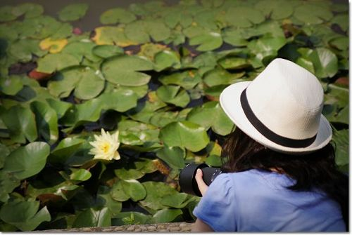

1865@Nanking @ May 29, 2009
本以为假期会以补觉度过，在昏睡一天半后，今天下午出门。
和Sherry去了1865创意园（原南京晨光机械厂）拍照。第一次摸索到那里，最好的拍摄光线都消磨在路上了。不过那里的旧房子令我们喜出望外，不枉此行。我们各自带了相机，相互拍，我拿她的相机给她拍，她拿我的相机给我拍，不过到了后面就乱了，不管是谁的相机，只要手上拿着相机就拍吧.....穿成这样完全是为拍照准备的，明亮的色彩与陈旧的背景能形成强烈的对比。两个人一起也方便，既是摄影者同时又是对方的模特，还是很有意思的。
暂且上这几张，赶紧睡觉要紧，明早又约了一起去东郊拍照，一早哦，7点接她...比上班还早！不晓得我这个瞌睡虫是不是能按时爬起来呢。

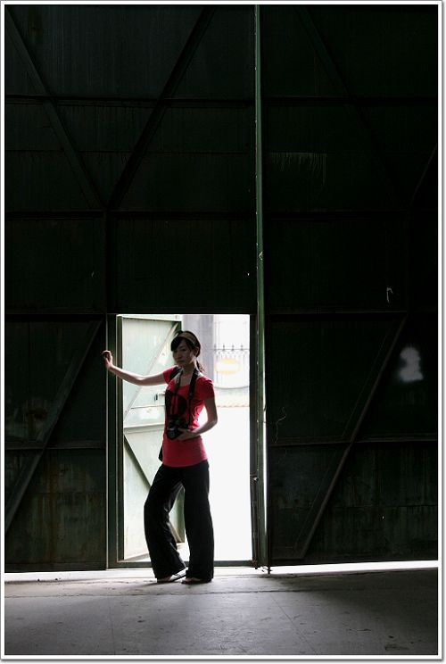
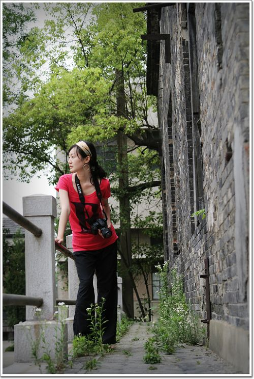
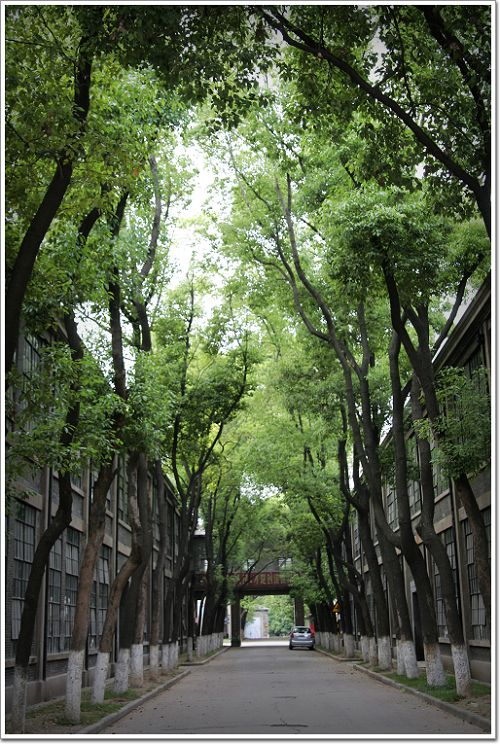
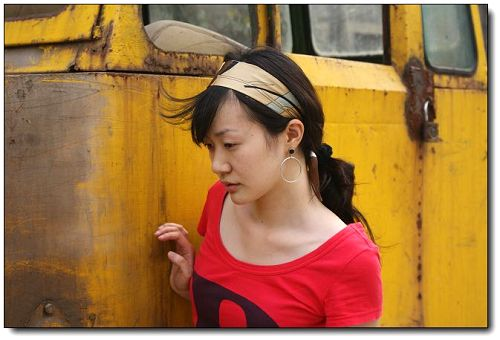

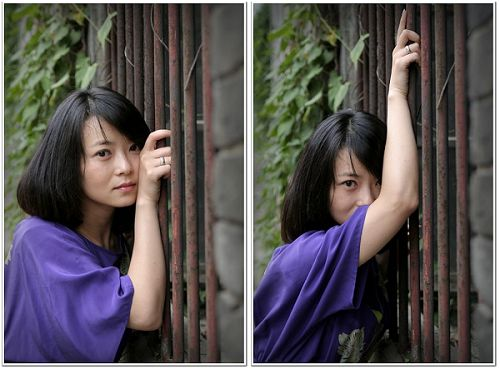

信任是一种健康的冒险 @ May 28, 2009
From:《心理月刊》2009年2月
一个关于信任的心理游戏。在一个小组中，一个人用手巾蒙住眼睛往后倒，有两个人在后面接着他/她，不会让他/她倒地受伤。有的人可以毫无顾忌地向后倒下去；有的人要拉开毛巾看一看身后是否有人、而且是否身强力壮，才放心地倒下去；还有的人，即使在确定了后面有人接着，也不能够倒下去，最后做成了向后走了几步的样子。
在这个游戏中，能够向后倒下去的人，拥有信任他人的能力。从这个游戏中我们可以看到，信任他人，是需要冒一点风险的，因为完全有那么一点点地可能性，你倒下去时别人闪开了没法按照游戏规则保护你，又或者他们想去保护你却没有足够的力量，这两种情况你都会受伤。
这个世界上，没有绝对值得信任的人和事，所以，只要有信任，就伴随着一定程度的风险。心理健康的人，会模糊处理这一问题，只要有大部分的把握，就选择完全信任，并在此基础上做该做的事情；而心理不那么健康的人，则会过分看重食物没有把握的那极小部分，使得行为变得迟疑不定、患得患失。
信任不是一种态度，而是一种能力。从根本上来说，一个人对外界的人和事物的信任，是其对自己的信任外向投射的结果。那些放心地倒下去的人，是把自己的值得信任的部分投射到了身后的保护者身上，这样的人做保护者也会尽职尽责，也许一个更简单的例子可以把这个问题说得更加清楚：在贼的眼里，所有的人都可能是贼。从这个意义上来说，信任他人，就是信任自己。
信任本身有点赌博的味道，当然是健康的、无大害的赌博。因为你如果信任了某一个人，实际上就意味着放弃了对他/她的监视、控制和警惕，而这样做一定是有某种程度的冒险的。那些敢于适度冒险的人，显然心理健康程度要高一些。
曾经问一个父亲，如果你不再管你已经上高三的儿子，那会怎么样？这位父亲立即回答说，那他岂不要翻天了？！接着再问，你在他那个年龄有人管吗？回答是：没人管。很显然，这位父亲缺乏对儿子的基本信任。
心理学家认为，对一个人的信任意味着，坚信每一个人的自然倾向是愿意被主流社会所接受，也就是说每个人都不会“心甘情愿”地去做反社会、反道德的事情。的确是有少数人那么做了，但这决不是我们要对每一个人都严加防范的理由。健康的社会的标准也是信任，即信任每一个公民在一般情况下都回遵纪守法。
人与人之间的信任，从来就是相互的。在我们不信任他人的时候，得到的“回报”也会是不信任。身处互不信任的关系中，没有人会觉得愉快。但若我们信任他人，“回报”也会是信任，身处这样的关系中的每一个人，都会得到人格上的滋养和提升。
身体会说话 @ May 27, 2009
一路去上岛咖啡一路接电话，既让人焦急又令晚上的心情变得烦躁，到达时才要求挂断诉苦的电话...我必须一把倒进唯一一个人见人爱的停车位，就听哐铛一声，后保险杠蹭到树干上....靠，倒车技术好又如何？也会因为烦躁惹下另一个麻烦！不过送Grace回去的路上看到一辆后保险杆撞瘪的白色英菲尼迪G37...吼吼...G37哦...心里龌龊的舒坦开了。
迷迷糊糊的Luke跟着我转悠到衣帽间，转悠到卫生间洗澡，再转悠到卫生间刷牙，然后倒在床边睡下，那时已经凌晨两点多。可我却比白天还要清醒，早晨8点起床，到公司整个身体坠啊坠啊......就要摊在地上...
根据中医的看法：
晚上9-11点为免疫系统（淋巴）排毒时间，此段时间应安静或听音乐；
晚间11-凌晨1点，肝的排毒，需在熟睡中进行；
凌晨1-3点，胆的排毒，亦同；
凌晨3-5点，肺的排毒。此即为何咳嗽的人在这段时间咳得最剧烈，因排毒动作已走到肺，不应用止咳药，以免抑制废积物的排除；
凌晨5-7点，大肠的排毒，应上厕所排便；
早上7-9点，小肠大量吸收营养的时段，应吃早餐。疗病者最好早吃，在6点半前，养生者在7点半前，不吃早餐者应改变习惯，即使拖到9、10点吃都比不吃好；
半夜至凌晨4点为脊椎造血时段，必须熟睡，不宜熬夜。
因过劳而造成体内器官阴阳失调，就是体内器官起内讧，互相打架，最后造成器官衰竭而死，希望你不是下一个！
*************************DRESS BLOG**********************
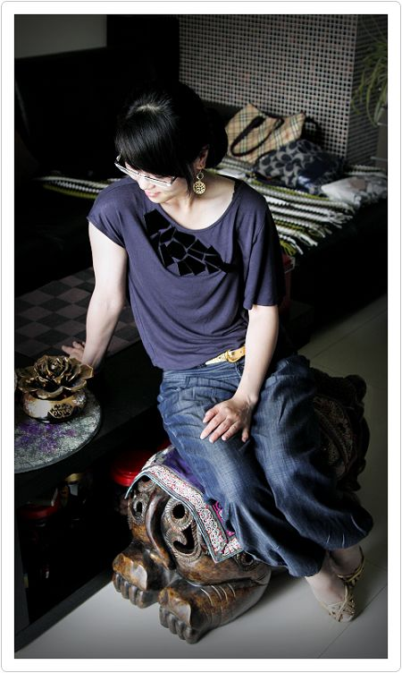
下面两张主要是看Luke的嗲样儿~
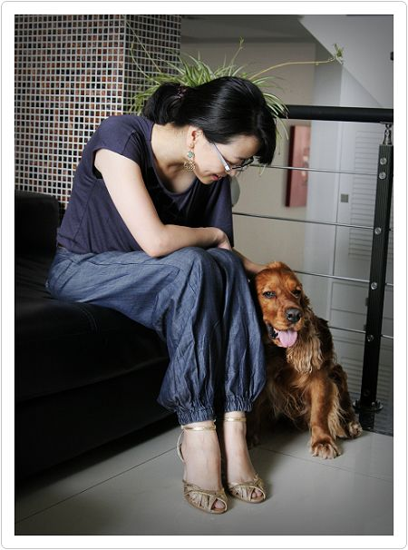
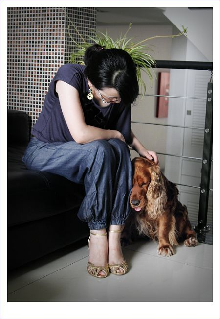

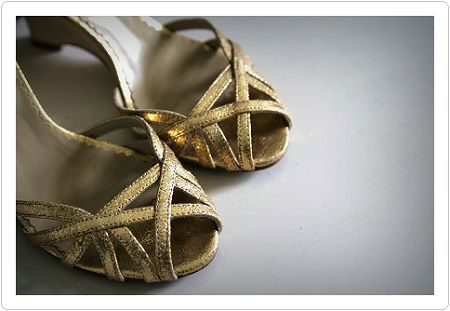

Amazing Grace @ May 27, 2009
下班后忙坏了，先是赶去一个十多人的饭局，然后赶去上岛咖啡见5年未见的好朋友Grace。这个夜晚最令我激动的人周日晚上到南京，周一办了一天的私事，周二见我，周三早晨回上海，周四返港。终于工作了，当她32岁从港大建筑系博士毕业后，已是她在港停留的第七个年头。
听说GD在她的影响下真正接受了主，这个曾经信奉喇嘛教的男人让她一度担心会出家的男人，2006年从丽江骑自行车去西藏寻找他心中的神庙，仍然是失望和消极等待着他的归去。这个曾经对香港说着永别的男人，却在主的感召下回到香港，虔诚地守护心中的信念.......
她摇晃着小脑袋，偶尔伸下舌头朝我挤下眼睛，一点没变...总能使我从浮躁中安静下来的人儿！她对这5年的叙述大多伴着主和耶稣...在某些瞬间我甚至觉得自己就要被她分享的福音所吸引，但马上坚定地眨几下眼睛将自己拉回现实中。面对她我感到亏欠，因为她送的中英文《圣经新约》我连翻都没翻过。“什么时候我们找个地方...丽江或者别的什么地方安静地呆几天就好了...”Grace说。我们都说自己变化很大，可又相互认为对方还是原来的摸样，当友情度过24年光景，世俗的尘埃似乎一点没有落入她的心间，而我的内心早已面目全非，莫非是主对她更加厚爱与关照？
短暂的相聚结束了....下一次见面是什么时候？
用劲的拥抱对方在分别时，眼泪夺眶而出，哎呀，都老大不小的，还这样干吗...
孤独的车奔驰在回家的夜空下，白天的压抑、浮躁、矛盾和疲惫被抛在满心美好之后。
有人说你每天过得既简单又充实，还有人说为什么你每天都过得那么快乐？
其实，我只是在努力的生活。
2004年@HK----
***香港片段（一）
***香港片段（二）
***香港片段（三）
***香港片段（四）

将这首“Amazing Grace” mp3送给亲爱的Grace...
《Amazing Grace》中文翻译为《奇异恩典》，也有人称《天赐恩宠》，grace原意为"优雅、优美"，此处解释成"上帝对人类的慈悲、恩宠"。是美国最脍炙人口的一首乡村福音歌曲，是美国人最喜爱的一苜赞美诗，也是全世界基督徒都会唱的一首歌，被奉为基督教圣歌。ROV. John NEWTON作于1779年，开始是一首传统的民谣，或黑人灵歌，它表达了宗教的忠诚，其中包含着一个平淡但是极富深意的赎罪的故事，它成了基督徒每次祈祷忏悔时必唱的曲目，后来它流行越来越广，超越了宗教，成了一首真正意义上的流行歌曲，成为人们祈求和平的经典歌曲，是人民精神世界的赞歌，歌的主题和《圣经》的主旨相符：忏悔、感恩、赎罪、重生，现在在任何庄严隆重的场合、在仪式上、在很多流行音乐唱片里、在国家级的典礼以及在美国前总统里根的葬礼上，你都能听到这首圣洁，祥和，庄重，优美的歌曲。
Amazing Grace, how sweet the sound
That saved a wretch like me.
I once was lost but now I'm found,
Was blind but now I see.
T'was grace that taught my heart to fear
And grace my fear relieved
How precious did that grace appear,
The hour I first believed.
Through many dangers, toils and snares
We have already come
T'was grace that brought us safe thus far
And grace will lead us home.
When we've been there ten thousand years
Bright shining as the sun;
We've no less days to sing God's praise
Than when we first begun.
被爱着的医师 @ May 26, 2009
爱抢镜的Luke说：“哼，笨叔叔笨阿姨怎么把我的名字改成‘LUCK’了呢？”
Luke [luk] ，发音和look一样。起源希腊，意思是“from Lucanus”，意大利南区的一个地名，也作为名字Lucius 和Lucian的英格兰形式，Lukas是荷兰语形式。圣经故事里：一世纪的一个基督教徒，被称为“被爱着的医师”，是医生和艺术家的守护神。他书写了福音书的第四章的一部分。名人有《星战》中的角色 Luke Skywalker，演员 Luke Perry，Luke Wilson。
***********************DRESS BLOG********************
黑色连身抹胸式蛋糕裙+宝蓝色丝棉坠感十足的中袖夹克。
很喜欢今天的搭配，既有女性面又被中性且帅气的夹克柔和了。
最近我胖了将近5斤，可是夏天到了哇，怎么可以....

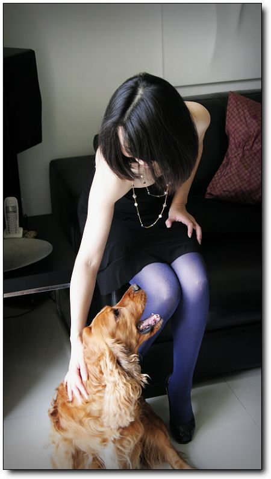
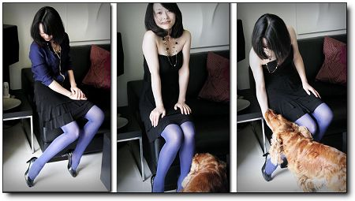
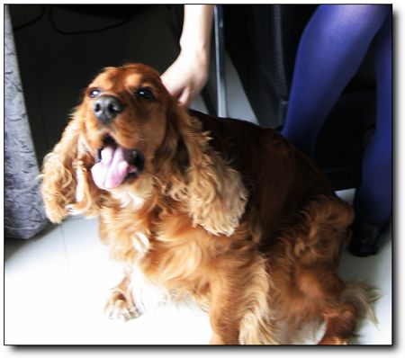
周立波的海派幽默 @ May 26, 2009
刚看完周立波的“笑侃30年”，以前一点不知道此人，见店里卖这碟子就买回家看看，的确有意思！
“一口上海话，一个人一个舞台，在周立波140分钟的表演内，观众笑声达680次，周立波站定，鞠躬，然后开始用上海话侃侃而谈。在接下来的两个半小时里，他仅靠一张嘴，马不停蹄地回顾了三十年来上海市衣食住行的巨大变化，从粮票、抽筋舞、砖头一样的大哥大到最近的股市暴跌，时而调侃，时而模仿，说累了就转过身去喝一口水，中途仅有一次换衣服暂停休息。
来现场看演出的几乎是都是上海本地人，他的精彩口条让全场1300名观众爆笑不止。不少中年人甚至笑到直不起腰来，咳嗽连连。
演出制作方曾用计数器计算过这场名为《笑侃三十年》表演中的观众反应：按每场表演为140分钟计算，笑声约有680次——这意味着观众平均十几秒就会笑一次。
2006年，周立波开始尝试使用类似单口相声的形式向观众调侃世相百态，出乎意料地受到了上海市民的热烈追捧，很像2005年底郭德纲在北京和天津的爆红，周立波也成为上海这两年来，从白领到市井不得不谈论的热门人物。而去年底开始的《笑侃三十年》主题演出，三十场的票房收入已经突破600万，创下了近几年来上海曲艺类剧场演出的票房奇迹。
不同于郭德纲苦熬十年出头，此时，距离周立波重返舞台仅有短短26个月。”
（文字来源：NEW TIMES）
有人想让他和郭德纲同台合作，他说让一个嚼蒜头的和一个喝咖啡的一块儿能和谐吗？“笑侃30年”讲的是1978年到2009年之间的事儿，大概从国内到国外的华人都对上海人有意见，不过周立波却透着对上海的无限热爱之情，有些反驳的观点倒也不无道理......听他侃笑坏我了，也勾起小时侯的许多记忆，一定要让老爸老妈也看看。
“一股脑儿” @ May 25, 2009
今天，雨。
所谓走出家门才能了解世界，近期在附近的BLOG转悠多了，发现一股脑儿的扎堆真多，跟流行病似的：
比如一股脑儿的张爱玲的“《小团圆》”；
比如一股脑儿的“某某分割线”；
比如数量单位一股脑儿改成“枚”，一枚苹果、两枚香蕉、三枚小心灵...；
比如一股脑儿的日本风摄影......
初遇“一股脑儿”，还是挺新鲜的。
可身在圈外，倒也脱离了“复制风”：
即使广播上烂播《小团圆》，不想看就不看；
即使“某某分割线”盛行，依然用N多的小*******号；
即使数量单位新奇到“枚”，咱还是一个苹果，两根香蕉，三颗小心灵；
即使纯情日风犹如初恋般滋味，这里还是喜欢明朗而又实在的摄影画面。
说话那么直，文字那么坦白，摄影如此写实，自得其乐在“一股脑儿”之外，这就是傻呼呼的茶风？要是一股脑儿的dress blog，多好玩啊~听说有个女孩儿用相机记录每天穿着，记录了三年，每天一张，三年下来是1095张相片，多么壮观的积累。
**********************DRESS BLOG*******************
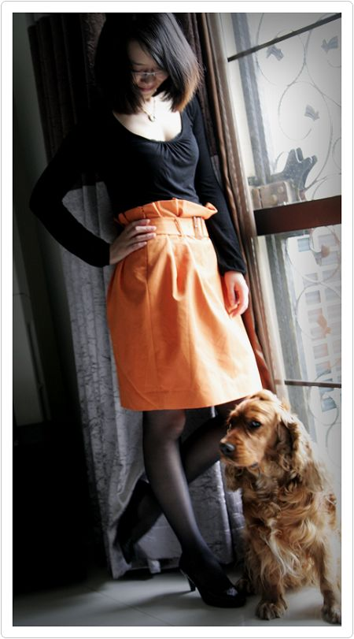


Good Enough Mother @ May 24, 2009
去看望父母，一起在外面吃了午饭。
每到周末父母电话就打来了，问在干吗，准备干吗...
其实他们是盼着与孩子们相聚。
《心理月刊》上写：在我们访问的女儿中，拥有“女人味儿”妈妈的，对妈妈的形象多表示满意。而拥有“母亲味儿”妈妈的，虽然跟母亲感情深厚，但大都希望自己的妈妈能过得再“女人一点”，并且与自己的生活保持距离。如果一个女儿有一个母亲味儿超过女人味儿’的妈妈，那这个女儿就注定不能辜负妈妈，不能让妈妈失望。她甚至不能抱怨妈妈太爱她，因为那会产生负罪感。
如此说来，有一个“女人味儿超过母亲味儿”的妈妈是否就是一件值得庆幸的事情呢？电影大师伯格曼的《秋日奏鸣曲》（Autumn Sonata）为人们展示了母女关系的另一极的荒凉景象。.......作为一个“女人味儿”妈妈的女儿，可能会感到自己被排除在妈妈的生活之外。她们长大后在母性方面的表现，也往往更随意自由。对她们来说做母亲不是一项义务，行为也可以百无禁忌，因为她自己的母亲在这方面表现得比较淡然。
所以做一个差不多的妈妈就是足够好。英国精神分析师Donald W.Winnicott提出了“足够好的母亲”（Good Enough Mother）这一概念。“足够好”在中文中可能会引起歧义，使人误解为“完美”，事实上，它更接近我们中文的“差不多好”的意思。
老妈今年68岁，兼具男人性格和“母亲味儿”....
她不愿上网的，其实她今天的红衫很靓。
我.......也希望自己的妈妈能过得再“女人一点”。

节俭的父母每次在饭店吃不完的菜都会打包带回去。
现在我也养成这样的习惯，打包回家省了做菜时间。
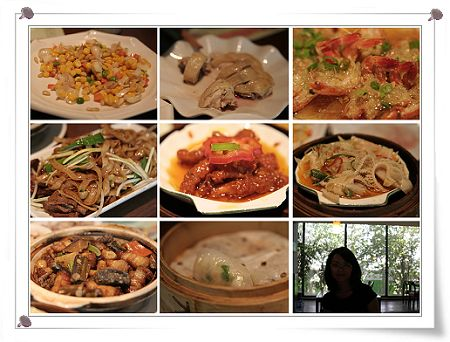
养了7、8年的博美犬，推算下来相当于人的43岁。
见我回来非常兴奋，又是舔我又是叼球来和我玩，博美的性格却有些古怪，玩着玩着它就会莫名其妙地发火，得小心翼翼瞧它的脸色呢。
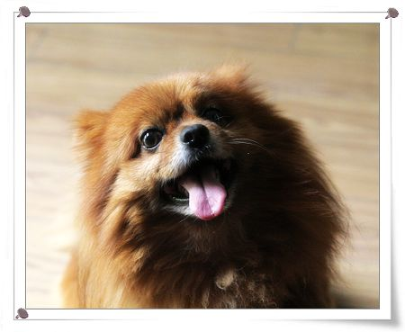
老妈盯着这条裤子唠叨，在我离开前还不忘从后面提一提它。

简单生活 @ May 23, 2009
每到周末时间总是过得so快，一眨眼的功夫，虽然还有一个星期天才到工作日，但这会儿便开始忧心重重了，缺心眼的时候感觉自己是那么的乐观，忧虑时又坚信自己属于悲观的。但是...下周只需要工作三天，然后连着歇三天，接着再工作六天....难怪Hellen得意地说：“国内有一年45天休假的单位吗？即使有也不好意思休吧？”所以，才会尤其珍惜工作以外的时间。
两点才吃午饭，接下来的时间泡在手佳又是按摩穴位又是捏脚，令人身心愉悦的三个小时。晚饭和四五个朋友吃火锅，席间笑到肚子疼，那些话题在过去我会非常鄙视，现在看法却不同，比起满目道貌岸然的伪君子，这些人是多么的真实。真实...对于多数人又是极其困难的。
吃饭时maggie从桂林发来一个测试的短信，是这样的：
选择一个手机尾号：4455、7800、8998、6789、4321、1212
（据说是美国时代周刊推荐的一个超准的测试题，答案后告。）
maggie更新的“交集”提醒了我，她正在桂林培训，而我认识的一个朋友居然和她在同一家酒店、她的隔壁开会。并且在上周五的下午两个人同时在线，一个在上培训课，一个在开会....世界真小啊！
我应该躺在你怀里... @ May 21, 2009
散步时泥巴水居然跑到你脸上了，那件超人台布雨衣挡了上面挡不了下面...回来直接洗澡吹风，虽然你很重，可是香喷喷的...让我抱抱吧，以前会把你抗在肩上或正面朝下抱在胸前，这次我要象抱babe一样抱抱你，喜欢这样吗？可是放下你我双臂上的肌肉分明在抽痉啊......
你的脸怎么看也不象是一只需要人怜惜的宠物犬，倒是比我还要成熟独立、有思想有抱负、经历过很多的狗狗！
我应该躺在你怀里才是~

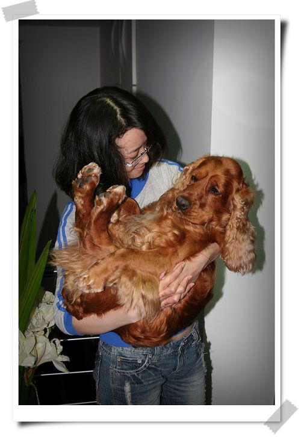
苦咖啡效应 @ May 20, 2009
一直等待天气预报中的雨天，怎么等也没等到...耐不住昨天中午洗了车，晚上就下雨了，NND~凌晨两点睡觉，一早8：36起床，8：50出门，9：04分按下指纹...早晨的飞车犹如喝下一杯苦咖啡之后...
哇，刚看到《我猜我猜我猜猜猜》里的嘉宾有王若琳，不好看气质也一般.......真是应了“声音好听的一般长得都不好唉”。
形象重要吗？不重要。
重要吗？重要啊！
尤其是文娱圈。
自制水果色拉，图省事只切了苹果和香蕉，拌上蓝莓和色拉酱，要是加上冰箱里的西瓜块会丰富这份色拉的色彩。味道不错。

**********************DRESS BLOG************************
不是去玩是去上班，睡得晚起的迟，哪有时间找衣服~
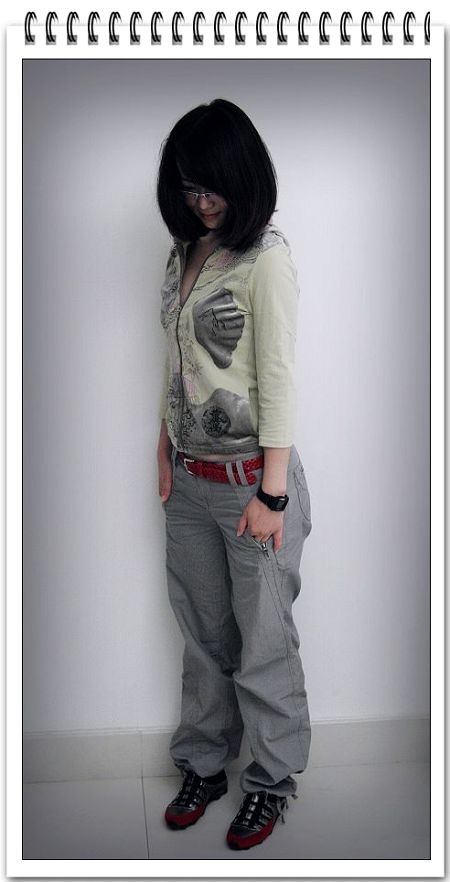

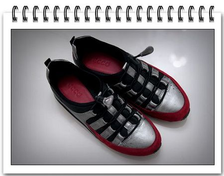
有朋自远方来，不亦乐乎。 @ May 20, 2009
晚上在人民大会堂看苏格兰芭蕾舞演出，和Hellen约了在1912吃饭，这样车可以停在1912地下车库，吃完饭走到人民大会堂就可以了。
Hellen这次回国比上次要丰腴许多，印象中很小巧玲珑的身材好象整个变大了一号。皮肤超好，让我这样锈掉了的肤色好生羡慕啊。她既是职业女性又是一个孩子的母亲，过着如意而安定的生活。质疑：从未怀疑过那些复制出来的生活方式吗？她很坚定地回答“没有”。也许正是没有反复折腾，人生才积累下多出常人的幸福吧？
1912泰煌，我还是比较热衷泰国菜滴~
南京最早的泰国餐厅在湖南路美食一条街，吃饭时间客人多的要排队，那钱赚的真过瘾！

Hellen点菜Ing~
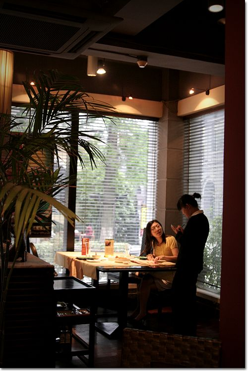
餐前小点“虾饼”，巴黎的中餐厅餐前也是这种小点，国内大多是瓜子一盘，或酸豇豆和花生米各一碟。

位于镜头最边缘的我好象变形了？

哈，请一位拿炮筒的器材党帮我们俩拍的合影，电脑上一看...对焦在我们身后掩面的女人...两张合影均对焦在别人身上....汗！永远不要被“貌似”所蒙蔽~当然要宽容待人，可是高标准总是自然而然针对高配置的人啊~

看完舞剧去喝一杯COSTA吧，这个来自英国的意大利口味、貌似快餐咖啡又保有浓郁咖啡味的咖啡.....恩哼...有点饶口.....颇受我们喜爱，每周来一杯就可以解决对咖啡的念想。这天晚上的两个女店员热情而可爱的帮我们拍照，热烈讨论相机和摄影，遇到喜欢摄影的人还是很有意思的~

鞋子颜色是今天DRESS BLOG的败笔，应该换双黑色鞋就好了。
哪晓得我就是那么想穿这双鞋出门呢？

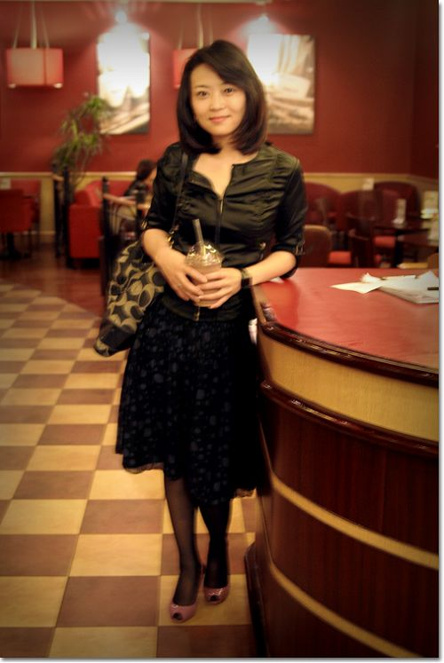
好的音乐会让人毛孔张开，好的舞蹈会让我蠢蠢欲动，胸腔里蕴藏着舞动的激情。上一次看芭蕾舞剧《大红灯笼高高挂》是在2005年，多么久远的事了....看到那时的自己...用一个朋友的话讲：“那发型象被发配边疆的女教师。”今晚两段表演，更喜欢前者。后一段《喜从天降》看不出剧情，舞蹈动作相对简单，群舞不整齐。里面两个亚洲女舞者，鼻子塌得可以，不过舞蹈功底很扎实。
一两个领舞并不能代表整个团队的水平，只要看看边上或后面演员的表现，就可以估量出这个舞蹈团的水准。Hellen说好喜欢在拉斯维加斯看的《歌剧魅影》，整个剧院就为这一部剧建造，常年演出，观众席俨然置身于戏中。对一个从未去过北美的人讲这些简直就是打击，这个先记下，等哪天看过之后再找你讨论~
由于奔驰赞助演出，想来拿着免费票的观众较多，孩子们也不少........甭说着装，能安静就是万幸。摄影器材党也不少，我身旁两个男人为拍摄位置小争了一下...请多给这个城市增加些文化文艺演出吧，难得一场，大家受宠若惊地抗着大炮筒、自备折叠椅，往中间走道一坐，怪可怜的。


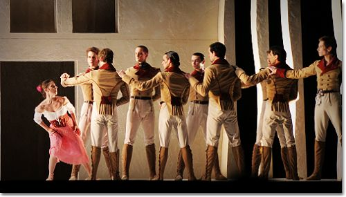
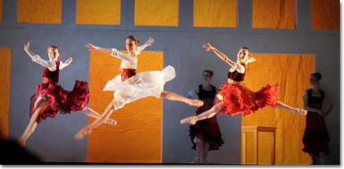


超人雨衣 @ May 19, 2009
在没有买到合适的雨衣前，一次性台布是它雨天的散步服。
上周六散步回来，背上一点没潮呢，很管用。
luke穿得超人一般从妞妞家楼下帅气地飞奔而过...
妞妞妈妈站在阳台上眼珠子要掉下来了。
妞妞是谁？它是一只超可爱的棕色松狮犬。
听说今天晚上又要下雨了......

周末拿着陈问问送的宠物飞盘兴滋滋地带它出去散步，游戏开始时它还咬着飞盘走两步，等我将飞盘扔起来...落下...它却若无其事地从飞盘旁边走过...反复扔了几次，依然如此，窘得人类站在那里无所适从。据说要先将飞盘滚起来引起它的注意，让他们先培养起感情...这么好玩的游戏怎么可以中断呢，继续努力吧~
每天在我关门的一刹那，它会冲到这里目送我出门上班。

陈问问：遇上更小的我。 @ May 18, 2009
收到陈问问的礼物，一个给我，一个给luke。
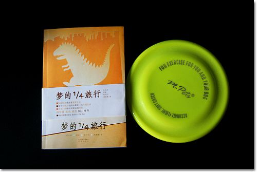
清新柔美的“陈问问”同学，超爱这张相片的氛围！
她是一个低调的写手，往往低调又是和才华联系在一起的。

“陈问问”遇上更小的自己~

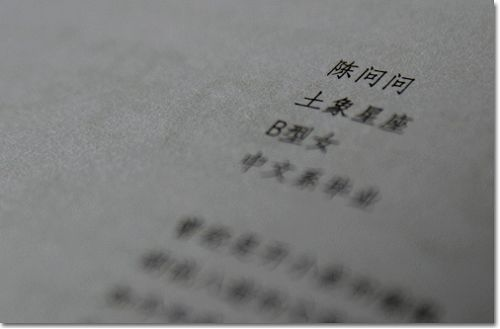


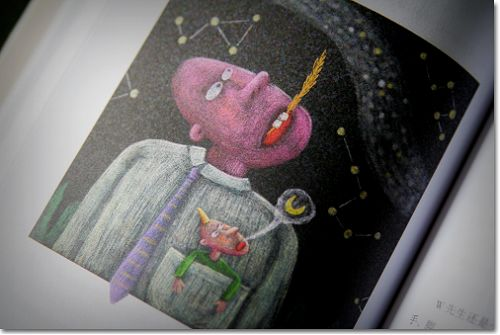
更小的她遇见更小的茶。
注意到她写字用的笔，研究了下和“遇上更小的我”封页上差不多粗细风格，细腻女子。
我的朋友们说看多了北京女病人风格的文字，当工作生活令人疲劳的时候，喜欢看问问同学这样清淡的、点到为止，让人立刻便能愉悦又喻意深刻的小文。她的文字给读者留下清新，没有世俗气，不矫柔造作的印象。如此清淡的风格没有一定的内功，是很难模仿的。记得以前有人曾说过，越是新手越喜欢用华丽的词藻，就是老罗讽刺的“文坛装B犯”。大师们写到后面词汇越来越简单......看来写作也有“禅”学在里面？
陈问问的blog地址：http://mosquito511.blogbus.com
先睹为快：梦的1/4旅行

***********************DRESS BLOG**********************
白色隐型竖条纹长袖衬衣，必须穿上长统丝袜。这时候的办公室比较冷。
某年流行“背带”购进的衬衣，背后为交叉状背带，小酷一下。
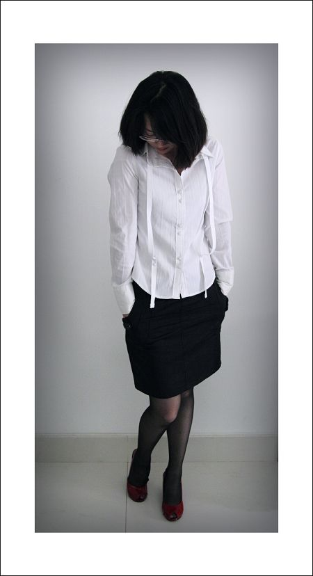
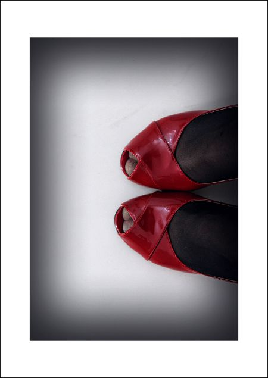
文化系女子 @ May 18, 2009
看到“文化系女子”这一新名词，觉得有意思，搜了下该名词的由来，转载如下：
日本出現一個有趣的新族群──文化系女子。日本《Eureka》雜誌，最先出現“文化系女子”這個名詞，該雜誌的《文化系女子特集》，甚至還引起日本廣泛討論。
“Eureka”是阿基米德泡在浴缸中，靈光一現，所喊出來的那個字， 它的意思是“有了”，是有所發現時的歡呼聲。以此命名的《Eureka》雜誌，正是希望能提出有影響力的文化評論。
雜誌中所提出的“文化系女子”是指喜歡閱讀、電影、藝術等文化事物的女性。後來，《達文西》雜誌也撰寫了文化系女子特集，並分析文化系女子是喜好、文學、音樂、戲劇等的女性，而且這些興趣大都是室內活動，她們不只欣賞各種藝文表演，對這些文化也有自己獨特的想法。《達文西》雜誌的專題，引起許多熱烈回應。
根據台灣日本綜合研究所的觀察報告，認為文化系女子其實就是不折不扣的女“御宅族”，但為什麼會受男性歡迎，最主要原因就在於男性主觀認定。日本是個物欲消費社會，而文化系女子因為有不同於拜金女購物的興趣，讓男性覺得知性優雅有氣質，尤其同樣是文化系的男性很喜歡和文化系女子心靈溝通，覺得比較容易親近或是容易有相同的話題。而這股文化系女子熱潮，開始被運用在許多宣傳廣告或產品開發中。
文化系女子是網路書店和宅配的忠實買家，被暱稱為“宅女”的這群女生， 沒事喜歡在家看影片或欣賞藝文表演，靜靜地在城市中生活。她們非常享受一個人的寂寞與美好，豐富的文藝活動，讓她們生活得很滿足。事實上，能跟自己好好相處，也是一門藝術。
以我片面的概念，“文化系女子”大概是那种极瘦极瘦，心思敏感脆弱、面色苍白，穿衣朴素，乍看上去没什么朝气，表面平静其实内心翻江倒海的喜怒哀乐，自命清高、孤芳自赏，超爱自我折磨和折磨人....的女子。《Eureka》杂志特别设计检验“文化系女子”的20项特征，如果符合其中15项的就算是“文化系女子”，以下是杂志中所列20项选择题，我有10个确认，显然不是这种类型：
1.喜歡看書 是
2.喜歡看電影和看美術展 是
3.喜歡從事寫文章、畫畫等創作活動 是
4.每天寫日記 是
5.喜歡獨自一個人 有时
6.覺得沒有朋友也沒什麼不好 有时
7.不想生小孩 看情况
8.喜歡散步 是
9.對戶外活動、運動等不擅長 不
10.有戴眼鏡 是
11.對於流行没興趣（比較喜歡老東西）都喜欢
12.比起長生不老比較想早點死 是
13.曾想尋死過 是
14.有妄想的癖好 不
15.曾在不知名的車站下車過 是
16.喜歡腦筋好的男生 有时
17.討厭好萊塢 不
18.四季中最討厭夏天 不
19.有跟大自己10歲以上的男生交往過 不
20.不太穿膚色的絲襪 是
周．末 @ May 17, 2009
痛恨不属于自己的周末。
即使是悠闲的。

很喜欢德国猪手配酸菜和土豆泥，可是这家将土豆泥换成土豆片，酸菜直接用韩国泡菜充当，看在猪手烧的不错的份儿上能接受。佐料用了我喜欢的奶酪加了芥末搅拌在一起，味道很好。

随手拿起别人的报纸翻了翻，很.....久没看报纸了，这是下一周电视节目预告的报纸，小时侯我家也订的。自从人类有了电脑和网络还需要报纸吗？是啊，除了新闻其他电视节目也很少看了...
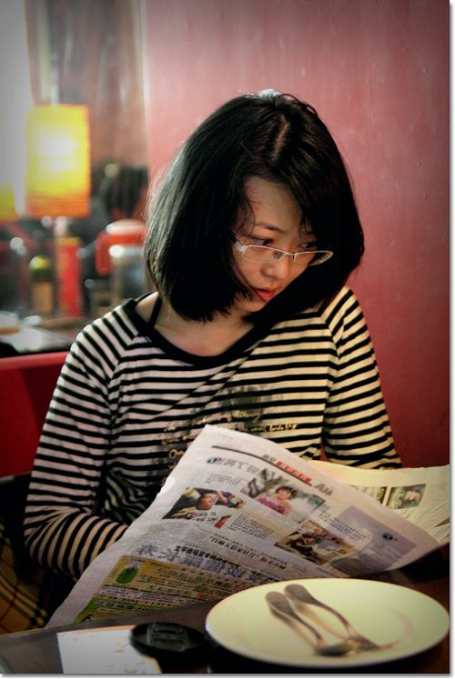
奇怪吧，没有餐刀。上菜的顺序也乱得可以，汤在主菜之后才上来。虽然没那么讲究，但既然打着西餐厅的招牌好歹象那么回事吧，也许这就是一个吃快餐的地儿？

刷上同色油漆应该也好看~

着实被一大盆瓶塞吸引了，这么多瓶塞一起呆着也挺壮观的，想起MVM收集的葡萄酒瓶塞。look！我靠着的是一个中式仿古柜子，细看下来整个餐厅的装修装饰象是吃简餐的环境，而菜谱上除了70%的西餐外还有韩国和墨西哥菜。真太好了，这混搭风无处不在~
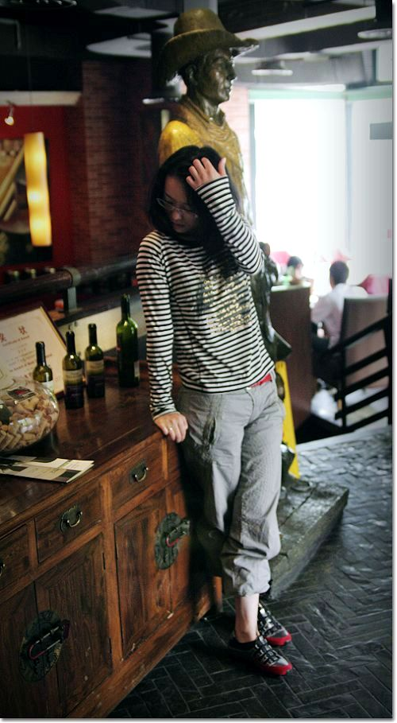
餐厅里三五对妈妈带着小小孩来吃饭，星期天爸爸们都去哪儿了？人生果然跑不出规律这玩意？路上几次塞车也是学校门口接孩子的父母影响了交通，有孩子的人生都这么辛苦？为什么呢？

喜欢隧道里镂空的设计，据说上面是空中花园。

张靓颖在opera show @ May 16, 2009
5月张靓颖上了美国opera show，连看两遍视频，作为中国艺人，她的演唱才华和英语能力值得称赞，而且可以看出张靓颖的台风和心理素质都不错，没太多压力。连Simon Cowell这个刻薄的音乐制作人也面带笑容全神贯注，还情不自禁地朝主持人挤了挤眼睛，潜台词似乎是“嗨，她唱得不错哦~”（Simon是《American Idol》和《Britain's Got Talent》的评委）
张靓颖在opera show上演唱了张艺谋执导、喜多郎作曲的《西湖印象》和爵士风格的歌曲《我的音乐对我说》，观众反应热烈！
Oprah说：Good. So I..I..I..hear I hear you are also a big fan of American music, who's your favorite?
Jane：Of course--Mariah Carey.
Oprah：Of course?
Jane：Yes. There's a story I really want to tell. When I was very young, I felt normal like anybody else, one day I went to a CD store, then I heard a voice, she sang--"There's a hero, if you look inside your heart, you don't have to be afraid of what you are..." I think..I'm a little bit nervous..But if I'm not a fan of Mariah, maybe, how can I do, how can I be a singer today?
Oprah：That's pretty amazing.
Jane：Yes!
......
这期opera show的主题就是 “选秀诞生的巨星”，张靓颖代表亚洲地区参加，大概是被她的美国制作人推荐给Oprah，然后Oprah邀请她。这是她在美国电视的首次露面便获得了众多关注，其中包括来自us-based angents的offers，她与华谊公司的合约也即将到期。
***张靓颖在opera show上的精彩表演
***opera官方网站对Jane Zhang的访谈介绍
*******************有关opera show********************
创办于1986年的《奥普拉·温弗瑞秀》，以白天日播的形式出现，试图为人们提供一个情感依托的空间，一个心理疗养所。不同于当时盛行的政治调侃类谈话节目，《奥普拉秀》将谈论的话题定位在社会、家庭生活领域，既不以制造公众闹剧来哗众取宠，也不以揭露隐私来赚取收视率，而是坚持在平平淡淡的相互倾诉中，为人们解决各种现实生活问题。节目通过辛迪加实现了网络化播出，如今在美国，该节目平均每周有近3300万名观众收看，并向全世界107个国家转播。自1987年以来，奥普拉和她的节目总共获得过35项美国电视艾美奖，连续18年高居美国日间电视收视率的冠军位置，成为美国电视史上的一个神话，也被许多谈话节目作为研究、借鉴的范本。
宝宝一周岁啦~ @ May 16, 2009
睁眼一看已经11：22，吃饭时间是12点。翻身起床以最快的速度洗漱，这时已有人从现场打电话给我说已经吃完了....呵呵~好友宝宝今天周岁宴请，庆幸的是每次起床到出门基本可以在10分钟内搞定，起的迟不怕，效率高就行。一照镜子，两黑眼圈挂在脸上，这下好了，现场不缺大熊猫了。
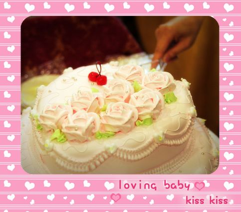
人不知而不愠 @ May 16, 2009
晚上11点前后带Luke散步，刚下过雨的草地上湿漉漉的，吹来凉爽的风.....一对男女的争吵声击碎了这一天中最最放松的时刻，寻着声音望去在隔壁小区一栋高层亮灯的窗户里闪过他们打斗的身影......
一个早期典型的愤怒青年在经历过无数次争吵之后，才明白只要心态不好，这世界有吵不完的架，譬如误传、误解、相互折磨...如今明白“人不知而不愠，不亦君子乎？君子有终身之乐，无一日之忧；小人有终身之忧，无一日之乐。
********************灵异传说***********************
一天只吃了晚饭，和两个属马的女孩儿，据说她们这个属相易遇到灵异事件，偶尔可以看到三维空间之外的四维或六维空间？可能人肉体之外真有四维或六维空间呢？谁可知？
和Luke散步的深夜我便东张西望，当然不是紧张，而是期望能遇到传说中穿着打补丁的短马褂，披头散发脚登小布鞋的旧社会男子，期望他能跟踪我至整个散步过程，在经过的每个路灯下出现霹雳啪啦的声响。然后我一转身迎面冲过去看个究竟，也许会穿过他的身体，只感受到空气？当然！结果是什么都没有发生，但在Luke凝视某个方向的瞬间我会想象它已看到传说中的幽灵。
哎呀！这个周末才刚刚开始就这么有意思，太酷了！
一杯咖啡引发的焦虑 @ May 15, 2009
晚上睡觉前喝了杯榛子摩卡，焦虑而起。
好在人人都有坏情绪，官方调查结果是80%的人一生中都存在不同程度的心理问题。主要是心情抑郁、焦虑、强迫。好在专家认为这是情绪的正常波动，而非病态。此时，不妨大哭一场，这是最好的自然疗法，或者看场幽默剧、听个笑话，对亲人倾诉或培养兴趣爱好。
尽管我对自己不满意，可我希望能对自己宽容一些。
但如果必须和龌龊的人打交道，你的生活也必将沾染上龌龊的感受。
**********************DRESS BLOG***********************
看到“pretty mom”和“Vivian”的dress blog，小小的兴奋！果真是prettymom说的那样“She makes me feel so embarrassed calling myself pretty.”会令人欣慰。当这世界“男不男、女不女”莫名其妙的盛行，我们还保有女性美丽的愿望，是件美好的事儿！
可能自拍是从2004年开始的？也许更早？
一支三脚架、一部相机，自己拍自己可以表达自己想要的氛围，一点不难。
摄影和写作一样，一种发泄情绪的方式。
如果你对摄影也有一些爱好的话，完全可以自己搞定。
这是一件丝绒休闲上衣，浓郁的宝蓝色很符合今天的心情。
Shot by myself@home
Canon 350D

有人听见了她的歌声。 @ May 14, 2009
好迷Nik Jay这忧伤的丹麦语说唱“Kan Du Høre Hende Synge ” ，大致歌词如下：
这个故事讲述的并不是Nik og Jay，而是我们遇见的一个小女孩，她告诉我们她的故事：
**她十岁的时候又转学了，两年里的第三次是她的规律。她离家的时候知道自己会面临什么，同样的show，同样的恨，同样的嘲笑。她是班里的丑女- 学校是地狱。她玩的都是同一个游戏，只有自己作伴。曾选择改变，但很快放弃。她学会仇恨自己，自己的脸，身体。谎报病假，恐惧上课，逃离学校。她惶恐 - 每夜都独自哭泣。她妈妈无动于衷，如果她偶尔能回家一趟的话。她是四兄妹中最小的，人们从来不注意她。继父酗酒。如果给他机会就送上两巴掌，只要妈妈没看见。所以你能看见她心碎在小巷的秋千上，你会听见她唱。。。
**她参加了一个疯狂的私人party，迷惑了，困扰了，找不到轨迹。幸福在她喝醉时来临，而就像往常她将自己灌醉了。昏晕，半裸地躺在床上，一个男孩在她身旁，房门没有锁。她太累了，无力反抗，闭上眼睛，想着别物。梦想着当上乐队主唱手，刊物的主角和拥有很多粉丝。
**秋天来了，她怀孕了，她无所谓。在大街上人们对她竖中指和嘲笑。孤独的男人是她的常客，越来越多。她得有钱来买酒精、毒品、婴儿衣物和尿布。但是小孩被拿走了，而她想着：“让地狱开始吧。”
可以听得见她唱：
她开始写关于光明与黑暗的诗，黑暗为主。她呼喊援助，无人响应。她站在火车总站，开始下雪，她开始回家，天已发亮了。她将最爱的碟放入音响。独自呆在空荡的房间，手上抓着一把安眠药的她准备好了。悄声对天使说：来，带我走吧！
她望着镜子流泪，诅咒着她没遇见过的爱情。有人敲着门，但声音没有传进她的耳朵。她渴望她马上要去的地方，你能听见她唱。
他松了口气，当医生告诉他她已恢复了。12个小时里他没有移动半步。他在等待看见她双眼睁开。他在床上发现她，四肢冰冷。她认不出他。他仅仅微笑并轻吻她的脸颊。
他一直爱着她，但是从来没有去追求。而她则离他太远，无法看见。但当他抓紧并轻抚她的手时，她发现可能这一切是真的。
她还在这里，她不再害怕。她闭上眼睛，开心，因为有人听见了她的歌声。
**********************DRESS BLOG***********************

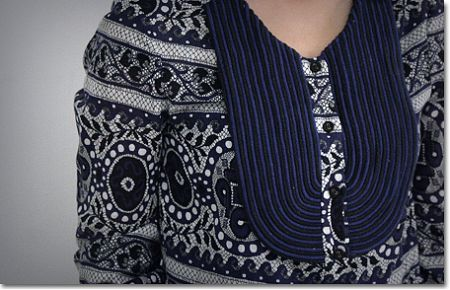

追夕阳 @ May 13, 2009
下班路上看到天边极美的夕阳，映红了云朵。
到家拿上相机带上Luke，去追夕阳。
太阳在手中一点点落下；


配上这首最感人的丹麦歌曲“en dag tilbage”（如果生命只剩一天） ，让我们一起追夕阳吧~
翻译如下：
如果你知道你能重新过一天，你会做什么
我又会做什么呢
我想我会.......
我会再从我公司的帐户取些钱
去买那辆心仪已久的车
朝我的邻居挥挥手
嘿，这可是辆2.4的新车
我会去找那个我一直心仪的女孩
带她去海边
管别人怎么说呢
我会打电话给我的哥们和女朋友
告诉他们，是他们让我找回我自己
照照镜子
说一声：嘿，还挺帅！
斜靠在椅之上，望着大敞的窗户，把收音机音量调到最大
我可不想现在和女人..
那我在这干什么
只想笑，享受着真实的自我
我会叫上所有的朋友和家人，
一起去海边
然后好好想想是不是已经回报
所有已为我付出太多的人
我想要把车停在马路中央
音乐响起，没错，我自己的音乐
所有人都又笑又跳
当然还要有海边烧烤
我会告诉我的兄弟们我真的为他们骄傲
他们一定明白我有多在乎他们
我会告诉我的老爸老妈，我真的爱他们
然后再问问什么时候他们能重新在一起
我会告诉我的朋友们
我们之间，尽在不言中
我会找到真正属于我的姑娘然后对她说
我就想这样，一直躺在她怀里
阳光洒在水面上
我抽着最后一支烟
喝着最后一杯酒
风掠过我的头发
也掠过我的“rockstar”眼镜
23岁了
我想看看我们的国旗
如果生命只剩一天
不要停歇
勇敢去爱
************************luke追的很辛苦**********************
luke：“如果只剩一天，请帮我找个GF吧~”；
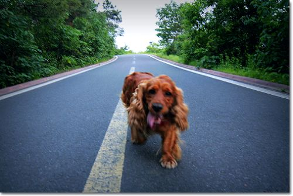
哼，今天我们追到夕阳啦！
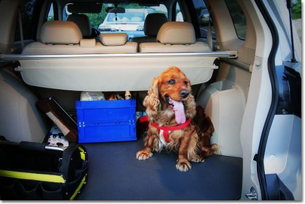
这无处不在的“嫉妒”。 @ May 13, 2009
喜欢现在早晚的天气，早晨醒来很清爽，晚上散步很惬意。
晚上在看江宁台的一个古装剧，讲永巷的女人们，也就是宫廷妃子们的斗争。那个演《奶娘》的女主角这会儿演了个心机十足的昭仪。算计到后来失去了皇上这棵大树，今天晚上就要被袁立演的皇太后收拾喽。女人之间的斗争真是太有意思了，心理阴暗争强好胜的产生嫉妒心理，于是硝烟弥漫，却也能铮铮有词地说着正义两个字。
无论好人坏人都是同情弱者的，我姐姐说“博取别人同情没什么不好，做个弱者获得的反而更多，”是这样吗？我关心的是那些善良的被嫉妒的妃子如何在复杂的宫廷里生存下去，不接招是万万不行的，而最终胜出的肯定是理智又智慧的，这也有运气在里面。哎~这荣华贵富与草根贱民谁也别羡慕谁，斗争无处不在，无所谓阶级，无所谓有产无产。
*********************园子里相继开放的花朵********************
自然界是一个大舞台，花朵们从春天开始相继上场。
摸样象菊花，不知其名。在太阳下又是向日葵的摸样；
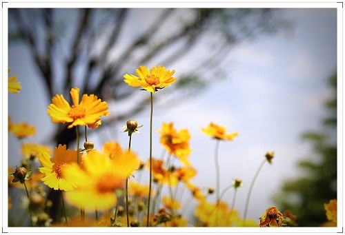

绿色里的那一抹玫红；

优雅的紫色；

大自然的色彩会象美妙的音乐一样令人毛孔张开；

它和人类一样忙忙碌碌，织着一张弱不经风的网，然后终其一生；
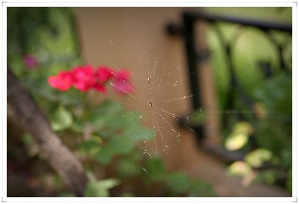
淡淡的花香，成片的长在一起煞是养眼；

风吹过花丛的样子；
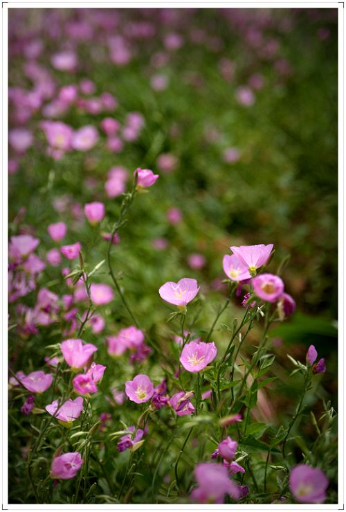
这柔软纤细的如头发丝般的草，让人想把脸在上面靠一靠；
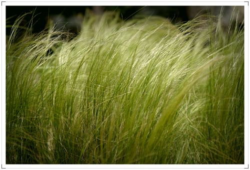
*************************午 餐**************************
杭椒牛柳&鱼香肉丝，昨晚溜狗时到附近饭店买回的菜。
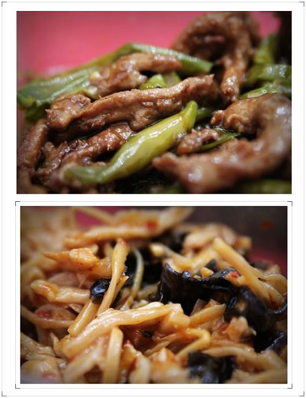
**********************DRESS BLOG***********************
对的，都是裤袜惹的祸！中午是左图打扮溜狗的，自然界都要被我雷倒了。
早晨急匆匆的上班，忘了穿袜子，的确有些凉。中午回家随手拿了裤袜穿，配这身裙子很雷人！溜狗前换了白色绣花黑裙，依然雷人。其实裤袜挺酷的，去日本的时候买的，质量很好，到现在都没坏。当然不能因为质量好因为它很酷，就不可能雷人一把？上半身文静下半身嬉皮，象极了我这个矛盾体，一半传统一半叛逆，好在就中午这一会儿雷人，咱一定会换上和谐的袜子再走出家门滴。

闷 @ May 12, 2009
下了雨的早晨显得有些闷热，办公室的中央空调停了，房间象一个闷罐子。
闷着毛孔和呼吸，闷着心情。
外在的力量是否足够支撑得起内在的快乐？
今天，就让今天这样过去吧~
*********************DRESS BLOG*********************


这快乐的... @ May 11, 2009
周末看了两部甩片，当然无论再经典都是甩片。最近睡眠很好，在两次差不多的梦境里热火朝天地杀虫子...解梦的说这是生活幸福的象征，真的吗？这琐碎而平淡的就是幸福？
@5月10日母亲节。

星期天莫愁路上的基督教堂里正在举行婚礼，婚车占用了机动车道停了好长一溜。隆重的在教堂门口布置了白色的纱帘和花朵，一定是基督教徒才会在教堂里举办婚礼吧？终于弄明白天主教信奉的是耶稣妈妈，基督教信奉耶稣，即前者信奉母亲，后者信奉儿子。
这天一个基督徒老奶奶跟我说起她养的猫，养了十几年，是只会说两句人话的猫。
***每次猫咪干了坏事，奶奶埋怨它，猫咪坐着不吭声，听奶奶讲完了，回答一句“没有”，拖着长长的尾音，开始的时候把奶奶吓一跳；
***这只叫作happy的猫咪与奶奶对视着，奶奶唤“happy”猫咪回答“唉”，奶奶反复唤它，猫咪反复回答“唉”...次数多了估计猫咪烦了，只张嘴不发音的答应奶奶，呵呵~奶奶的女儿带猫咪去宠物医院看病，把它放在包里，到了医院打开包唤它，猫咪连答三个“唉唉唉”，神了！**长春老猫说人话**
***这位奶奶是金陵大学（南大前身）校长的女儿，虔诚地基督教徒。我认识几个基督徒，他们的面孔比大多数人看上去宁静祥和，难道世间的浮躁都被宗教过滤了？据说莫愁路上的这家基督教堂是奶奶家族于30年代捐款建造的。
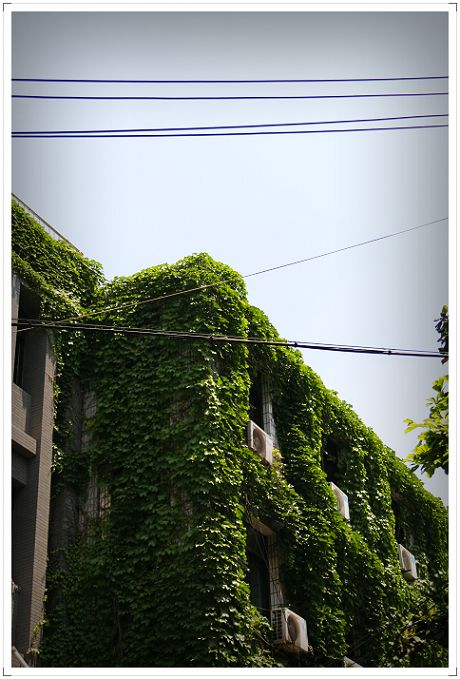
天气有多热呢？看看luke在空调房间里四脚朝天的快活样儿就知道了。散步回来的luke总会拣最阴凉的地方肚皮贴地趴着，如果开空调它一定是趴在空调口下面。热啊，一下子就热了，5月份就得时不时的开开空调，能想象出有多热吧？最高温度34度啦~好在今晚上要下雨，如果天气预报准确的话，好在周末没洗车，嘿嘿~

周末的晚上带Luke上山玩，它趴在开着的车窗上，整个脑袋露在外面兴奋地朝前张望，两只大耳朵被风吹地飘起来象两只翅膀，这小小飞行狗的英姿飒爽...甭提有帅！可惜吹了我一脸狗毛和几滴快乐的口水....Luke要是被画出来应该是下图这个样子，快乐的帅狗狗。

中午烧了一个青豆紫菜汤，放了些麻油。对呀~烧饭的时候我也好快乐，奇怪了？每每闷闷不乐的时候都会往生理周期上追究原因。这跷跷板似的情绪变化莫测。

********************DRESS BLOG********************


流浪狗搭地铁进出城 @ May 10, 2009
太好玩了，转载一下：莫斯科流浪狗会搭地铁 白天进城晚上回郊区
中新网4月16日电 据台湾东森新闻网报道，俄罗斯科学家说，莫斯科的流浪狗已变得愈来愈聪明了，这些野狗每天早上搭地铁进市区，在街头觅食，忙完一天后又赶搭地铁返回郊区过夜，就跟人类的上班族一样。
流浪狗为何会发展出这种独特的生活方式？
环境学者普雅科夫从1990年开始研究流浪狗的生态，他说：“俄罗斯资本家把工业从市区移到郊区，野狗一向以工业区为家，因此便随工业区搬到郊区；而市中心是最佳觅食地点，这些野狗便学会搭地铁。
经过几代的经验传承后，这些野狗甚至学会相互合作、根据搭车时间来判断该在哪一站下车、会搭乘一列地铁中最前面与最后面的安静车厢，以及发展出迫使人类多给它们一点食物的技巧。例如装可爱，它们把头搁到人类的膝盖上，露出无辜眼神。这些野狗简直把人类的心理给摸透了。
普雅科夫还观察到，野狗们在市区行走，竟然会等红绿灯过马路，偶而会搭错电扶梯，例如往下走，却搭上了往上的电扶梯，但她第二次就学会改善，并选择了正确的电扶梯。
跟调皮的孩子一样，野狗搭地铁时也会找乐子，故意在列车门即将关闭前，冒着尾巴被夹住的危险冲进车厢，或者是跳上座椅，跟人类乘客挤在一起取暖，再用鼻子顶顶对方的手提袋，抬头对人笑一笑，似乎在说：“老兄，你袋子里有没有吃的？”；更有趣的是，狗也会在车上睡过头，下错站。
咖啡时光 @ May 09, 2009
两个人，两杯咖啡，两碗鸭血粉丝汤，一部相机，一个下午。
有一些快乐分享，有很多感受交流，也有乱七八糟的抱怨要排泄。
认识久的人很多，能坦诚交流并分担彼此内心的对象却寥寥无几。社会上多的是吃喝玩乐的伴儿，既浪费精力也浪费金钱。我们都遇到过当面微笑转身捅刀子的所谓“朋友”，人性就是这样丑陋的！千万不要以年龄来判断人类的纯洁、善良、阴险与狡诈，也不要怀疑“相从心生”的道理哦，对“脸不正、皮笑肉不笑”还是近而远之的好。
在各式面孔中既认定对方作知己朋友，会接受所有好和不好，矛盾当面交流，建议直接提出，对外维护好友形象和利益。除了这些基本原则外，喝咖啡时还谈到“真诚而稳固的友谊是需要时间过滤和沉淀的”！信任是所有稳定关系存在的前提，那么好吧，让我们保持对彼此的信任继续分享下一个7年。

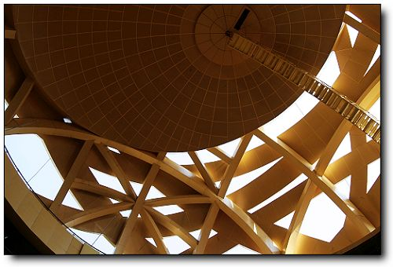
明天是母亲节，商家非常及时地提供地方供顾客写下只言片语；
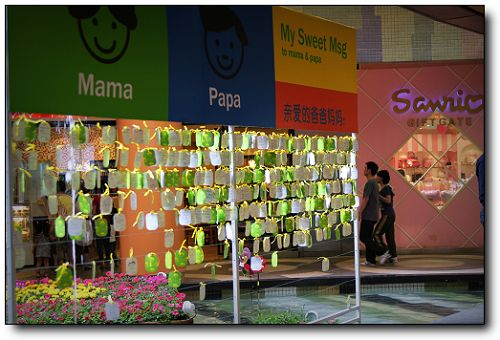
妈妈，我爱您！

约了下午一起喝咖啡。
路上打Sherry手机，占线...
到她家门口再打，还是占线...
换打座机，号码有误...啊呸...
那么发个短信吧，终于与组织取得了联系...

在我火急火燎千方百计联系她的时候，估计她就是这个表情在与同学侃大山。
虽然我有迟到的陋习，但却缺乏耐心等待别人迟到，啊...那个放火...点灯啥的比喻一下比较恰当；

真是心有灵犀，不约而同地都穿了绿衣衫见面，修炼到这份儿上不容易啊！
有意思的是常一起厮混的好朋友连生理周期都会越来越接近（包括网络通讯的方式），即使分隔两地。
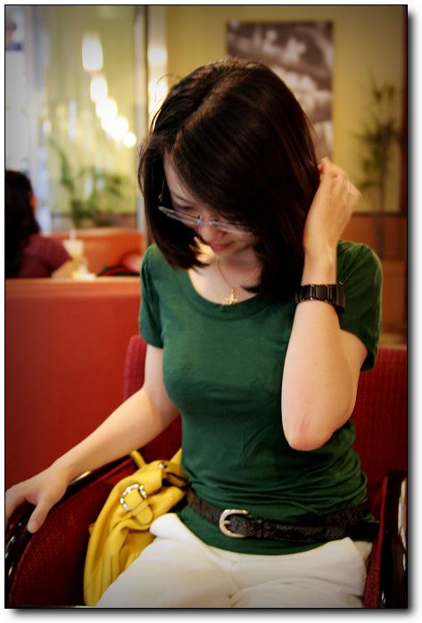
粉嫩的肤色，黑油油的头发，醇红色的地板，熟绿的连衣裙，艺术吧？
不露脸的摄影的确带来美好想象，可她露着兔子牙柔软而甜蜜的笑脸更可爱。

据说北京满大街都是短发，不管年轻的还是年老的，有人恨不能赶紧将头发留长，南京恰恰相反，这会Sherry看到满眼一样的中长卷发腻歪极了，就当我们义务地改善一下人群形象的单调也好~不知是过了新头三分丑还是自己渐渐适应，我已经接受自己的短发了。
Sherry进去咨询冰沙的事情，为傍晚电台电话直播采访做准备；

如果是晚上，这些喷泉会发出五彩亮光，会很好看吧？
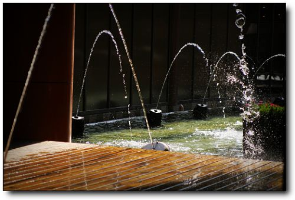
看到这个头戴粉色花朵的女孩儿，肃然起敬，真想冲上去和她握个手，鼓励她继续这种勇敢的我行我素精神！
有次在飞机上和一个女孩聊天，她高中自己联系去了英国。在女校英国同学们除了学习外还兼会多种乐器，以及马术之类的技能，这是最令中国留学生感到力不从心的。学校里平时以黑灰衣服为主，所以一有活动女孩们喜欢在头发上戴粉红或大红的鲜花，而且看到粉色的东西会好喜欢...这样啊？
国内头上戴花最著名的当属杨二车娜姆，网络上对这个女人极尽讽刺挖苦，无论是因为她头戴大红花还是颇具争议的表达方式亦或个人私生活，在我看来完全没有必要，每个人在不影响他人利益的前提下为什么不可以按照自己的方式活着？在制造并传播流言蜚语的评论者中，我坚信男性所占比例会高于女性。现在你在人群里打一秆子下去能打中几个纯爷儿们？俗气的女人热爱制造并传播是非，男人的八卦功夫也愈来愈彪悍，这世界除此之外好象没别的美好事物存在，太匪夷所思了。
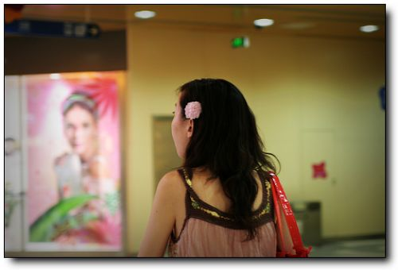
这个“街拍”拍得懒呢，坐椅子上不带动一下，端起相机就拍。
南京MM们审美意识比往年有提高，赞一个！否则连我这个女人都会为“满街尽是华欣妹”而感到在这个城市里生活着的悲哀。

哈哈~两个人吃鸭血粉丝汤吃得都很投入啊，Sherry就差挽起裤管下去捞了；

“回味鸭血粉丝汤”空着很多座位，倒是又麻又辣的川味小吃人多多哦。

You Did. @ May 09, 2009
刚看完纯粹的美国式电影《Teeth》，这部电影之后男人们在ML时是否会有所顾忌？电影并没有强调视觉上的感官刺激，也不算一部上乘之作。"Vagina Dentata-Mythology”源自阴道里长牙齿的传说，而所谓恐惧，大部分来缘于人类对未知世界的担忧以及对阴暗世界的猜测。也许还可以追朔到各地各时期存在性器崇拜的历史痕迹。
事实上这部电影一点也不恐惧，它讲述的是“生我之门灭我之道”，男人们通过各种方式获得性，而女人又会以性来报复男人。大概就是这部电影所隐喻的含义？
整部电影结束后，我上百度确认“阴道是否会长牙齿”的疑问，象我一样关心此问题的人不在少数，妇科专家给出一个坚决地否定。印象深刻的还有Chuck Prophet演唱的片尾曲《You Did》，喜欢他的声音，规律的节奏感，旋律也好听！该歌曲被收录在“Age of Miracles”专辑里：

i got a letter this morning
i got a letter this morning
i got a letter this morning
who put the "bomp" in the bomp-shooby-dooby-bomp
who put the "ram" in the rama-lama-ding-dong
you did
i got a letter this morning
who put the "bomp" in the bomp-shooby-dooby-bomp
who put the "ram" in the rama-lama-ding-dong
you did
you did
wake me up if i should drift away
i don't wanna miss a thing
take my hand and lead me all around
i don't care
where we're going
who dug the crude and made it flow
who proved that anything was possible
you did
i got a letter this morning
who built the house and brought it down
who raised the roof and never made a sound
you did
you did
i got a letter this morning
wake me up if i should drift away
i don't wanna miss a thing
take my hand and lead me all around
i don't care
where we're going
i got a letter this morning
i got a letter this morning
i got a letter this morning
who rose right out of the morning mist
opened my heart like a baby's fist
you did
i got a letter this morning
who cleared the static and made it sing
who put the wheel on the gravy train
you did
i got a letter this morning
you did
wake me up if i should drift away
i don't wanna miss a thing
i got a letter this morning
take my hand and lead me all around
i don't care
where we're going
who put the "flip" in the flippity-flop
who put the "hip" in the hippity-hop
who put the "boom" in the boom-boom-shaka-laka
you did
i got a letter this morning
who put the "bomp" in the bomp-shooby-dooby-bomp
who put the "ram" in the rama-lama-ding-dong
who put the "wang" in the wang-dang-noo baby
you did
i got a letter this morning
i got a letter this morning
i got a letter this morning
i got i got a letter this morning
who put the "flip" in the flippity-flop
who put the "hip" in the hippity-hop
who put the "boom" in the boom-boom-shaka-laka
you did
总有不堪的回首 @ May 08, 2009
谁回首以前留下的痕迹都会觉得有幼稚的部分存在吧？无论办杂志、玩摄影还是码字儿的。偶尔看到以前写的，心里时常一惊：呀，原来当时自己是这样的？
“想停止矫情与抒情的范儿，换个方式。”我说。
maggie：“这样的‘中国茶’有人味儿，不需要换。”
只要不是朋友看完某人blog在电话里用“怪怪的”三字儿形容就好。但凡活成人群中的人精的blogger，总使人望而却步。稍微傻点儿并不是为了讨大男人欢心，而是愚钝的人总比精明的人活得快乐的多，不是吗？
美好的周末又要上场了，这周只看了一部电影《The Girl from Monaco 》（摩纳哥女孩），因为封面上的男主角Fabrice Luchini是在《Paris》里饰演一位和少女谈恋爱的中年男人，他的特立独行和随心所欲，以及面容中坦露的脆弱深深吸引了观众，也由此对他留下深刻的印象。这部片子的女导演认为Fabrice身上有着某种优柔寡断和孩子气的东西，就好像他还没有完成从青春期到成年的过渡期。电影中他演绎一个对自己剥蚀和风化，而在律师职场上的叱诧风云却丝毫不能阻挡他在女人面前缴械投降，放弃了一切批判精神！谁在自己喜欢的人面前不是这样呢？电影中的两个男演员我都很喜欢，因为他们混合了我所喜欢的性格和外在表现力。
片中那个年轻漂亮无所顾忌的女郎所呈现的生活方式、那个没有任何风格的香媚的闺房以及她所持的两性观念，带给我们惯常思维的冲击力与目前中国社会现行的伦理道德观念几乎差不多。我不怀疑1912的房檐下时常也会发生电影中的种种，但仍然会被琴弦拨乱神经。我们就是这样一点点的麻木，然后一点点的适应，然后逐渐老去。

*********************DRESS BLOG*********************
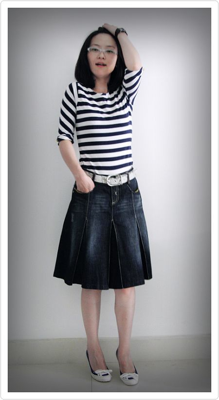
《城客》：双城记 @ May 07, 2009
第二期blogbus的《城客》几经周折终于寄到我这儿，感谢横戈惦记，每每让我有免费的杂志阅读。这期最先被关注到的是“童话大王”字样，这在以前早被忽略不计会随手翻过的页面。
虽然写的是童话大王，文字却真切写给成年人阅读的经验与经历，郑大王说“35岁以下的人不知道皮鲁鲁和郑渊洁的，恐怕只有两个，一个是我儿子的女友，另一个是我侄子的女友。让我得意的是我成功地用联姻的方式填补了这个空白。”不好意思，我也不知道皮鲁鲁和郑大王哎，体会到童话美好也是因为童话写手“问问” ，所幸的是郑大王用《城客》填补了我这个无知又无趣的人的空白。最近几个朋友电话询问“问问”同学情况，说喜欢她的文字和相片，想认识她，其实我不过和你们一样只看其字未见其人哦！拜托，不要逼我么~
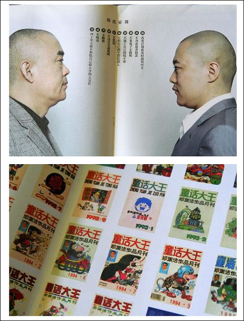
譬如这十条“郑氏家训”就很靠谱，尤其1、5、6、10；

还喜欢“双城记”。一个整日坐班以写blog调节生活滋味的枯燥的上班族，能坐在家里一缆众山小，还有比这个既节约成本又不浪费可贵的年休假更令人爽快的事儿吗？

早早听横戈提到《城客》准备做一个N个城市里的书店的展示，其中有南京的“先锋书店”，专门找了在南京的刘小备拍摄“先锋书店”，不过文字没有点出先锋书店的情感渊源，毕竟还是要生活在南京久了的读书人写，体会才更深刻呵？多少有些潦草，匆匆带过似的，不细腻，不如北京那三家书店写的好。无论怎样，先锋还是会给远离南京的南京读书人带去念想滴，这就不错了。

第二期《城客》内容颇为丰富，从时尚到娱乐，从摄影到美食，从大众喜闻乐见的情事到小众欣赏的Re design....还有目前最最风行的街拍，摄影质量明显高于网络上展示的街拍。


这个...这个是某某人喜欢的插画，这期大部分《城客》文章都配有可爱的插画，如今插画也是流行内容之一了？有意思的是好些文章都是blogbus用户所写，这也是那些大牌杂志所不具备的亲近感。

对于一本新出道的杂志来讲，我们的确看不到未来会怎样。
就象人类尝试一件新事物，心里总会没底儿。
认真细致和执着地走好每一步，其它的顺其自然吧~
《城客》在香港销售也很好，我在想如果扩大到欧美市场呢？
海外华人是不是更需要这样一本杂志来了解国内生活，解决乡愁？

***********************DRESS BLOG***********************
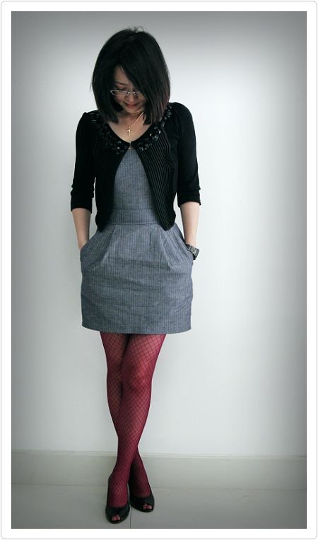
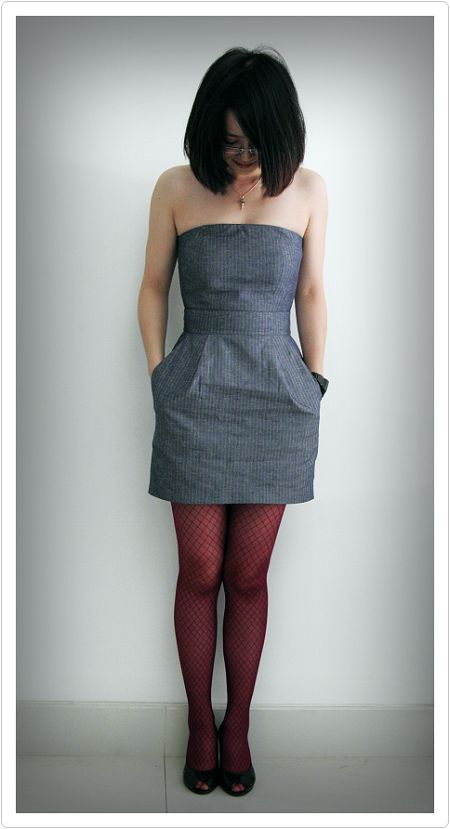
寄生生物 @ May 07, 2009
这个熊草草又来了，孜孜不倦地复制中国茶每篇BLOG，貌似将中国茶放在友情连接里，却是无效连接，而且是只有中国茶是无效连接，其它都可连接到源地址上。和这个人一点交情都没有，何来“友情”？这是要脸还是不要脸呢？
熊草草全年午休的复制，这行为就象在大街上遇到纠缠不清的不良男子。
要炒作，你自己赤膊上阵、自力更生；
想YY，给别人做个blog连接。
多简单啊~不是吗？
上次被骂过，你不是愤愤不平吗？
这会儿怎么热脸又贴冷...
现在的男人果真志气越来越短？
不免让人联想到寄生生物！
北京有人认识这位IT人士吗？
夏天里得瑟的冷笑话。 @ May 07, 2009
缺心眼和自以为是在我看来是一回事。那样的身体里面蕴藏着熊熊燃烧的力量，义正言辞，纵然前面有荆棘挡道，有妖魔鬼怪也不会胆怯，高举对这个社会无知的火炬，照亮前进的道路....
人群中总能搜索出这么几张勇往无前的面孔，天真无辜。挥舞着宰牛刀去杀鸡，啊呸，无一例外的不靠谱，是夏天里得瑟的冷笑话。
中午．快乐 @ May 07, 2009
风车，俏皮；

costa人性化设计的外带杯；

转动出五彩气流的风车；

她的童心妈妈送的小熊项链；

理想和现实的差距在于：理想在樱桃上，而现实却不在樱桃上；

好朋友说喜欢自己拍的这张，这就传上来博取其欢心啦；

水游城-1楼的中午人很少，从天井散射进来的阳光被波光凌凌的水包裹着，柔和了建筑，这样的设计与风水有关吗？
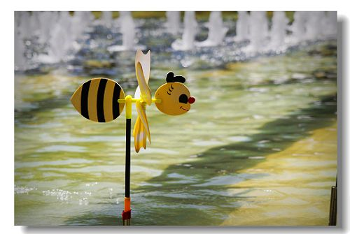
好看？好闻？还是好吃啊？

看着就很享受！

****************Dress Blog****************
@ZARA

@COSTA
唏嘘不已。 @ May 05, 2009
中午和以前的老领导们吃饭，不过不如和同辈的老朋友相见来得痛快，毕竟职位高出好远，在社会生活里也是永远走在前面的人。很开心，什么都没有改变似的，只是吃饭这个活动无法静下来交谈，总是热闹而奔放的进行着。
中间有人递手机给我，一听就猜出来是谁，比我大一岁的她在北京定居发展，正在登机准备去德国参加20多天的培训...当年在她面前我的内心可是无比清高，甚至居高临下的姿态...所以说袋子里装了100只球，即使拿出的99只是白球，千万不可断定最后一只也是白球，没准儿就是袋子里唯一的黑球呢。
其中一个领导在阅读和书写上对我有着渊源流长的启蒙作用，当年看过他的钢笔字我模仿过很多年，如今这字体早已改头换面，且因依赖电脑疏于练习而渐行渐远。《收获》也是从他处获得的一件珍藏多年的宝贝。此前很多年里无法进入阅读状态，停顿了一段时间。当重拾阅读的心境和欲望，我又继续订购每两个月一本的《收获》。上述两件事儿对于我的人生是极其宝贵的体验也受益非浅！
“你现在还写文章吗？”
他说：“早不写了，那些都是带着理想色彩的东西，和现实不符......你可千万别哭啊...”
对于走仕途的人是没有自我的，我认为。文学的确对他帮助不大，但在人的心灵空间里是否还会存有一些值得依赖的美好呢？
假如当年重新选择人生道路，假如留在那里，假如....人生没有假如，人生的十字路口说拐弯就拐弯了，哪容你考虑许久？人类总有羡慕他人生活的习惯，事实上他人生活也只是听到或看到的摸样，不身在其中岂能体会出酸甜苦辣？那么最重要的唯有努力并积极地过好现在的生活，才是对自己人生应付的责任！
中午没回家，Dress Bolg在办公室完成的。外面是件藏青色七分袖的短外套，中午的温度万万穿不上身了，回到公司外套遗忘在车上，所以只能拍下这件眼花缭乱、有着大大灯笼袖的连身裙。据说后天最高温度达30度，夏天终于来了。

刚需 @ May 05, 2009
某天顺路带一同事，人家本着房价有上涨趋势，早买早放心的原则去看房。
USA Today上面一组有趣的数据：根据2008年8月NAR对一万个买房和卖房人的调查， 首次购房者的年龄中位数是30岁， 收入中位数是6.06万美元， 典型价格是16.5万美元。有趣的数据。
美国：30岁、收入与房价比为6万：16.5万
中国南京：27岁、收入房价比为10万：97万
（97万房价是按照最近买房的几个年轻人的平均房价计算，工作第3、4年全年收入在10万左右。）
我们公司有无息贷款政策，可借15万，分三年还清，多贷部分按照银行利息计算，但上限不超过20万（含15万无息部分）。例如一套95万/120平的房子，首付45万，剩下50万做公积金贷款。
坚持房价不会持续下跌的人总是喜欢拿房子是“刚需”来说事。不像股票这种“弹性需求”。“刚需”是硬性的，必需的东西。人人都得住房，房子总会有销路。上述这组数据比较下来，美国比南京健康许.........多啊！
不太理解的是公司提供免费宿舍（两人一套），不急于结婚、找人同居或准备一辈子独身，工作才2、3年...放着免费的房子不住，（只要不结婚，在公司工作，住一辈子都没人赶你走）背起沉重的负担购房。总之我是特别不喜欢背债过日子的人！这样的买房人必须保有一份稳定的、年收入最少10万的工作，生活质量才不会太差。当然还贷的前四年会比较艰苦。由此可见现在年轻人是多么的的自信和乐观！
Dress Blog @ May 04, 2009
黑底细条纹双开叉西服+黑色小象体恤+黑色蛋糕裙+红色腰带+红色磨砂皮鞋
**5年前的蛋糕裙，百搭款，仍然深得喜爱；
**黑底细条纹双开叉西服，袖口被挽起两道，削弱了正装效果；
亮片、钻石和珠子锈出的饱满的小象图案，摒弃了亮片的低俗；

**难打理的红鞋子，舍不得经常穿它。

彩虹车 @ May 03, 2009
这次上海车展出了一款雪铁龙全新“C3毕加索”MPV款新车，车身为彩虹般的渐变色。
**尺寸：4.08X1.73X1.62米
**五个座位
**行李架下的空间将达到500升（按VDA标准）
**全景式玻璃车顶
**仪表台的材料使用了高质量的软质塑料
**四款发动机选择：VTi95和VTi120汽油发动机，以及HDi90和HDi110柴油发动机
估计这车的性能也好不到哪里去，借一时尚的外衣增加卖点而已。擦块漆，补起来难度大了。说到毕加索，N年前曾有茶友留言说他们东大的老师都买这车...奇了怪，我到现在还记得？今天在街上看到“MG SW3”，忽然觉得这车的外型象被打包的package，黑色前保险杆、防擦条及后保险杠象是封箱带，让这个package看起来非常结实，呵呵~

《招待所的那些事儿》 @ May 03, 2009

《对话》6月1、2日上演蓬蒿剧场 @ May 02, 2009
演出时间：2009年6月1日—2日 19：30
演出地点：蓬蒿剧场
剧场地址：东城区交道口南大街 东棉花胡同
票价：80元，50元（学生）
剧场电话:64006472
24小时热线：13911208207
编舞： 小珂，婓高
演员： 小珂，婓高
作曲：殷漪
现场音乐：虎子
艺术家介绍：
小珂：现居北京，编舞，舞者，观念肢体艺术家
六岁习舞，持续了１２年中国民族舞的学习与表演，１８岁考入上海复旦大学，开始自行研究现代舞，１９９８年成立个人舞蹈工作室“小珂舞蹈工作室”，２００２年开始进行跨媒介的艺术合作，２００５在上海与张献等艺术家成立组合嬲肢体剧团，２００７年在北京成立ＵＧＬＹ观念肢体工作室。其作品曾授邀在上海，北京，香港，荷兰，德国，意大利，法国，奥地利，挪威，新加坡，英国，爱尔兰等地多次上演。近年，以独立艺术家的身份更多地参与到国际合作的创作项目中，建立了与德国，日本，瑞士，爱尔兰的长期合作。
婓高：现居北京，编舞，舞者，影像艺术家
早年研究人类语言学，２５岁开始专攻现代舞，曾多次与欧洲著名舞团编导合作，并建立Bodies and Buildings机构。其作品涵盖舞蹈剧场，户外肢体，舞蹈电影等多个领域，并受到欧洲艺术发展联合会的重视与支持。频频授邀在欧洲各国，美国，加拿大，日本展演。近年着重研究中国文化与当代艺术的沿承发展，并建立了与不同领域艺术家的广泛合作。
殷漪：现居上海，音乐家，环境声音艺术家
早年成立死亡诗社乐队，２００３年作为最新兴的一批严肃音乐创作者活跃在上海的音乐，剧场等演出中。２００５年作为组合嬲肢体剧团的成员，开始剧场音乐的创作，并授邀在上海，北京，香港，荷兰，德国，意大利，奥地利，挪威，新加坡，英国，爱尔兰等地上演。２００６年受聘在上大美院，复旦视觉艺术学院教授声音创作课程。近年创立了“声音旅行”，“边缘．场”等艺术项目，其鲜明的音乐风格得到国内外众多好评。
虎子：现居北京，音乐家 摇滚乐手
早年成立“NO”，“病医生”，“苍蝇”等摇滚乐队，和中国最早的电音组合“FM3”。出版发行了“叛客”，“口痴”，“两个人的旅行”等多张音乐专辑。并多次受邀参加荷兰，德国，意大利，瑞士等国的音乐节，进行中国实验音乐的演出。近年组建了中国第一支电音摇滚乐队“宠物同谋”，乐队时髦的音乐和外形很快就成为各大时尚媒体的新宠。与此同时他还积极保持着与舞蹈，影像等艺术形式的跨媒介合作。

活着，只为等待死亡！ @ May 02, 2009
上一次去动物园还是儿童时期，恰好放假打算去看看真的熊猫。劳动节的下午赶到红山动物园快四点了。里面的人比动物还多，操着各地口音的大人带着小孩，放眼望去乱糟糟一片，好似赶集即将散场的画面，这种时候我总是心生厌恶，人类就象蝗虫一样吞噬着大自然。早些时候看过一部幻想记录片，大致意思是说人类用上千年制造出的文明世界，从人类消失的那天开始，大自然只需要两百年就可将其夷为平地，恢复原状。
没想到南京唯一的动物园如此糟糕，动物们被关在各自的院落和笼子里，没有良好的卫生环境，仅仅稍微高级点的灵长类动物还有点小娱乐设施，其它的基本就是水泥钢筋围起来的生活。人有人的命运，这些动物呢？一生将在水泥钢筋里等待死亡。
恨透了那些站在笼子外面对着里面睡觉的动物大呼小叫、往里面砸东西、用硬物敲打笼子的人类！因为你的到来它们就应该来段精彩的表演或者杂耍吗？什么样的大人带着什么样的小孩，他们不感到廉耻，他们对生命本身就没有尊重！
或许，那些动物对于人类卑劣行为早已习以为常，活着，对于它们来讲就是等待死亡！
猴山更象是个垃圾场，看着那些纵容孩子往下扔东西的家长，想象着他们的孩子长大后的人生，以及由他们组成的这个社会，油然而生地心寒！


**狮子与老虎的故事**
三只狮虎兽，是雄狮和雌虎杂交的后代。成年狮虎兽体型据说比狮子老虎都大，体重达400公斤以上。如果它们诞生于此，那么它们将不知道外面还有属于它们的广褒天地。那么它们也许会安于现状，而活得稍微快乐些？

动物园将狮子、东北虎和孟加拉虎各一只放在同一个饲养圈里。不知道哪个鸟人想出来的艘主意，是为了繁殖狮虎兽吗？

雄狮子从远处走向围栏边，人群渐渐沸腾，大人小孩吆喝着从别处涌到我们四周。
接着这只狮子朝着某个方向大声吼叫了几声，那声音低沉而穿透力强，着实令人震撼。
然后它卧在草坪上，看着那个方向，显得极其忧郁。
有人会反问：你怎么知道它是忧郁呢？
因为我发现隔着狮虎兽的院子的另一边是两只成年雄狮和雌狮。与隔壁那只雄狮相比这只混养的雄狮显得格外魁梧高大，有森林之王的气质。它这么卧着，静静地凝视，听着那边狮笼传来回应的吼叫.......象被关押在监狱里的犯人，靠着某些渠道仍然与同类保持着交流，你能说它是没有感情的冷血杀手吗？而外面的人类极其丑陋地兴奋着，象一群野蛮的小丑！

如果你家里有宠物的话，就不会无视它们的眼神：茫然、漠然、鄙视、空洞、愤恨，毫无生气。有一件事情让我相信动物是有心理活动的，小区有户人家养了只小狗，因为主人怀孕而将它弃之门外，后来这只小狗见到这家主人就怒吼。知道它的时候它已经在小区里流浪，靠好心人喂些食物活着。警察叔叔抓无证狗狗时，它就消失了。


孤独的河马生存于咫尺之间，它身后的人造水池里蓄满了污浊的绿水，墙壁上喷着班驳的粪便，它躺在那里一动不动，睁着眼睛等待黑夜来临。

去的太晚的缘故动物园已经赶人出园了，没能找到熊猫馆，匆匆地看了一眼趴在玻璃窗后面的猩猩，因为房间里没有开灯而显得异常昏暗，那只猩猩象小孩子一般天真地望着玻璃外面的人类。它的饲养员在门外大声催促，她这就要下班，将她的工作遗留在黑暗的房间里过夜。这只透着渴望与无辜眼神的猩猩，只能拿着它的小树枝孤独地睡去？希望它的睡梦中有无比美妙的梦境，有成片茂盛的树林和果实，有自己的伙伴，有......本属于它的猩猩的命运！

我们来到这里是要感受动物的快乐？还是感受人类的快乐？总之从动物园出来我一点也不快乐，也丧失了小时侯有关动物园的快乐记忆！曾经梦想过当一名动物饲养员的我在颤抖，感到作为人类的耻辱，我哭泣着怨恨这貌似文明的世界。想要拯救它们，却分明感到虚弱的如它们一般无助。同时我还感受到了愤怒！！！